Process and merge data
Luisa M. Mimmi
Last run: 2022-06-27
Work in progress
setup
## Loading required package: pacman– Set stopwords [more…]
# --- set up stop words
stop_words <- as_tibble(stop_words) %>% # in the tidytext dataset
add_row(word = "WDR", lexicon = NA_character_) %>%
add_row(word = "world", lexicon = NA_character_) %>%
add_row(word = "report", lexicon = NA_character_) %>%
add_row(word = "development", lexicon = NA_character_) %>%
add_row(word = "1978", lexicon = NA_character_) %>%
add_row(word = "1979", lexicon = NA_character_) %>%
add_row(word = "1980", lexicon = NA_character_) %>%
add_row(word = "1981", lexicon = NA_character_) %>%
add_row(word = "1982", lexicon = NA_character_) %>%
add_row(word = "1983", lexicon = NA_character_) %>%
add_row(word = "1984", lexicon = NA_character_) %>%
add_row(word = "1985", lexicon = NA_character_) %>%
add_row(word = "1986", lexicon = NA_character_) %>%
add_row(word = "1987", lexicon = NA_character_) %>%
add_row(word = "1988", lexicon = NA_character_) %>%
add_row(word = "1989", lexicon = NA_character_) %>%
add_row(word = "1990", lexicon = NA_character_) %>%
add_row(word = "1991", lexicon = NA_character_) %>%
add_row(word = "1992", lexicon = NA_character_) %>%
add_row(word = "1993", lexicon = NA_character_) %>%
add_row(word = "1994", lexicon = NA_character_) %>%
add_row(word = "1995", lexicon = NA_character_) %>%
add_row(word = "1996", lexicon = NA_character_) %>%
add_row(word = "1997", lexicon = NA_character_) %>%
add_row(word = "1998", lexicon = NA_character_) %>%
add_row(word = "1999", lexicon = NA_character_) %>%
add_row(word = "2000", lexicon = NA_character_) %>%
add_row(word = "2001", lexicon = NA_character_) %>%
add_row(word = "2002", lexicon = NA_character_) %>%
add_row(word = "2003", lexicon = NA_character_) %>%
add_row(word = "2004", lexicon = NA_character_) %>%
add_row(word = "2005", lexicon = NA_character_) %>%
add_row(word = "2006", lexicon = NA_character_) %>%
add_row(word = "2007", lexicon = NA_character_) %>%
add_row(word = "2008", lexicon = NA_character_) %>%
add_row(word = "2009", lexicon = NA_character_) %>%
add_row(word = "2010", lexicon = NA_character_) %>%
add_row(word = "2011", lexicon = NA_character_) %>%
add_row(word = "2012", lexicon = NA_character_) %>%
add_row(word = "2013", lexicon = NA_character_) %>%
add_row(word = "2014", lexicon = NA_character_) %>%
add_row(word = "2015", lexicon = NA_character_) %>%
add_row(word = "2016", lexicon = NA_character_) %>%
add_row(word = "2017", lexicon = NA_character_) %>%
add_row(word = "2018", lexicon = NA_character_) %>%
add_row(word = "2019", lexicon = NA_character_) %>%
add_row(word = "2020", lexicon = NA_character_) %>%
add_row(word = "2021", lexicon = NA_character_) %>%
add_row(word = "2022", lexicon = NA_character_) %>%
filter (word != "changes")
# --- set up stop words stemmed
stop_words_stem <- stop_words %>%
mutate (word = SnowballC::wordStem(word ))A. World Development Reports (WRDs)
- DATA https://datacatalog.worldbank.org/search/dataset/0037800
- INSTRUCTIONS https://documents.worldbank.org/en/publication/documents-reports/api
- Following: (Kaye 2019; Robinson 2017; Robinson and Silge 2022)
A1. Data (ingestion) loading & cleaning
Ingestion of WDR basic metadata was done in
./_my_stuff/WDR-data-ingestion.Rmd and the result saved as
WDR.rds <– (Being somewhat computational intensive, I
only did it once.)
- WDR = tibble [45, 8]
- doc_mt_identifier_1 chr oai:openknowledge.worldbank.org:109~
- doc_mt_identifier_2 chr http://www-wds.worldbank.org/extern~
- doc_mt_title chr Development Economics through the ~
- doc_mt_date chr 2012-03-19T10:02:25Z 2012-03-19T19:~
- doc_mt_creator chr Yusuf, Shahid World Bank World Bank~
- doc_mt_subject chr ABSOLUTE POVERTY AGGLOMERATION BENE~
- doc_mt_description chr The World Development Report (WDR) ~
- doc_mt_set_spec chr oai:openknowledge.worldbank.org:109~
Ingestion of WDR lists of subjects was available
among metadata but presented issues (difficulty to extract, many records
with repetition,apparently wrong) so I reconstructed them manually in
data/raw_data/WDR_subjects_corrected2010_2011.xlsx taking
them from site https://elibrary.worldbank.org/ which lists
keywords correctly Es
2022 WDR
# WRD metadata taken with API get (issues)
WDR <- readr::read_rds(here::here("data", "raw_data", "WDR.rds" )) %>%
# Extract only the portion of string AFTER the backslash {/}
mutate(id = as.numeric(stringr::str_extract(doc_mt_identifier_1, "[^/]+$"))) %>%
dplyr::relocate(id, .before = doc_mt_identifier_1) %>%
mutate(url_keys = paste0("https://openknowledge.worldbank.org/handle/10986/", id , "?show=full")) %>%
# eliminate NON WDR book
dplyr::filter(id != "2586")
# WRD subject/date_issued taken by manual review
WDR_subjects <- readxl::read_excel(here::here("data", "raw_data",
"WDR_subjects_corrected2010_2011.xlsx")) %>%
drop_na(id) %>%
# eliminate NON WDR book
dplyr::filter(id != "2586") ## New names:
## • `` -> `...6`
## • `` -> `...7`
## • `` -> `...8`# delete empty cols
ColNums_NotAllMissing <- function(df){ # helper function
as.vector(which(colSums(is.na(df)) != nrow(df)))
}
WDR_subjects <- WDR_subjects %>%
select(ColNums_NotAllMissing(.))
# # convert all columns that start with "subj_" to lowercase
# WDR_subjects[3:218] <- sapply(WDR_subjects[3:218], function(x) tolower(x))
# join
WDR_com <- left_join(WDR, WDR_subjects, by = "id") %>%
dplyr::relocate(date_issued, .before = id ) %>%
# drop useles clmns
dplyr::select(#-doc_mt_identifier_1,
-doc_mt_identifier_2, -doc_mt_date,
-doc_mt_subject, -doc_mt_creator, -doc_mt_set_spec) %>%
# dplyr::relocate(url_keys, .after = subj_216 ) %>%
dplyr::rename(abstract = doc_mt_description) %>%
# correct titles -> portion after {:}
dplyr::mutate(., title = str_extract(doc_mt_title,"[^:]+$")) %>%
dplyr::relocate(title, .after = id) %>%
dplyr::rename(title_miss = doc_mt_title) %>%
dplyr::mutate(title_miss = case_when(
str_starts(title, "World Development Report") ~ "Y",
TRUE ~ NA_character_)
) %>%
dplyr::mutate(subject_miss = if_else(is.na(subj_1),
"Y",
NA_character_)) %>%
dplyr::relocate(subject_miss, .after = title_miss) %>%
dplyr::relocate(ISBN, .after = id)
#paint(WDR_com)
# convert all columns that start with "subj_" to lowercase (maybe redundant)
WDR_com[, grep("^subj_", names(WDR_com))] <- sapply(WDR_com[, grep("^subj_", names(WDR_com))], function(x) tolower(x))
# combine all `subj_...` vars into a vector separated by comma
col_subj <- names(WDR_com[, grep("^subj_", names(WDR_com))] )
WDR_com <- WDR_com %>% tidyr::unite(
col = "all_subj",
subj_1:subj_46,
sep = ",",
remove = FALSE,
na.rm = TRUE) %>%
arrange(date_issued)
#paint(WDR_com)– Some manual correction of wrong metadata
# adding actual titles
#WDR_com[WDR_com$date_issued == "1978", c("date_issued", "id", "title")]
WDR_com$title[WDR_com$id == "5961"] <- "Prospects for Growth and Alleviation of Poverty"
#WDR_com[WDR_com$date_issued == "1979", c("date_issued", "id", "title")]
WDR_com$title[WDR_com$id == "5962"] <- "Structural Change and Development Policy"
#WDR_com[WDR_com$date_issued == "1980", c("date_issued", "id", "title")]
WDR_com$title[WDR_com$id == "5963"] <- "Poverty and Human Development"
#WDR_com[WDR_com$date_issued == "1981", c("date_issued", "id", "title")]
WDR_com$title[WDR_com$id == "5964"] <- "National and International Adjustment"
#WDR_com[WDR_com$date_issued == "1982", c("date_issued", "id", "title")]
WDR_com$title[WDR_com$id == "5965"] <- "Agriculture and Economic Development"
#WDR_com[WDR_com$date_issued == "1983", c("date_issued", "id", "title")]
WDR_com$title[WDR_com$id == "5966"] <- "Management in Development"
#WDR_com[WDR_com$date_issued == "1984", c("date_issued", "id", "title")]
WDR_com$title[WDR_com$id == "5967"] <- "Population Change and Development"
#WDR_com[WDR_com$date_issued == "1985", c("date_issued", "id", "title")]
WDR_com$title[WDR_com$id == "5968"] <- "International Capital and Economic Development"
#WDR_com[WDR_com$date_issued == "1986", c("date_issued", "id", "title")]
WDR_com$title[WDR_com$id == "5969"] <- "Trade and Pricing Policies in World Agriculture"
#WDR_com[WDR_com$date_issued == "1987", c("date_issued", "id", "title")]
WDR_com$title[WDR_com$id == "5970"] <- "Industrialization and Foreign Trade"
#WDR_com[WDR_com$date_issued == "1988", c("date_issued", "id", "title")]
WDR_com$title[WDR_com$id == "5971"] <- "Public Finance in Development"
# wrong year
#WDR_com[WDR_com$date_issued %in% c( "2011","2012","2013", "2014", "2015"), c("date_issued", "id", "title")]
WDR_com$date_issued[WDR_com$id == "11843"] <- "2013"
WDR_com$date_issued[WDR_com$id == "16092"] <- "2014"A1.a Troubleshooting some obs
PROBLEM: some of the subjects collections are evidently wrong (either they are the same of another WDR or the list is impossibly long)
MY SOLUTION #1: I took them manually from the website “elibrary” https://elibrary.worldbank.org/action/showPublications?SeriesKey=b02
But, there still is WDR 2011 (“Conflict, Security, and Development”) which misses keywords
MY SOLUTION #2: I take the abstract and I create my own “plausible list” of subjects
— Extrapolate subjects from abstracts - for record with missing subjects/keywords
(*) There will remain a problem: this corrected records have tokens and not bi|n-grams (which make more sense)!
# --- identify wrong subject obs
WDR_wr <- WDR_com %>%
filter( subject_miss == "Y")
# names(WDR_com)– WDR caseid = 4389
# --- tokenize abstract
WDR_4389 <- WDR_wr %>%
filter(id =="4389") %>%
select (abstract) %>% as_tibble() %>%
tidytext::unnest_tokens(word, abstract) # -> 251 words
# --- remove stop words
# --- isolate meaningful tokens
WDR_4389 <- WDR_4389 %>%
anti_join( stop_words , by = "word") %>% # -> 131 words
# Count observations by group
count(word, sort = T) # -> 101 words
# rename column in result corrected
WDR_4389_w <- t(WDR_4389) %>% as_tibble() ## Warning: The `x` argument of `as_tibble.matrix()` must have unique column names if `.name_repair` is omitted as of tibble 2.0.0.
## Using compatibility `.name_repair`.
## This warning is displayed once every 8 hours.
## Call `lifecycle::last_lifecycle_warnings()` to see where this warning was generated.names(WDR_4389_w) <- gsub(x = names(WDR_4389_w), pattern = "\\V", replacement = "subj_")
# --- graph words
# p <- WDR_4389 %>% count(word, sort = TRUE) %>%
# filter(n > 600) %>%
# mutate(word = reorder(word, n)) %>%
# ggplot(aes(n, word)) +
# geom_col() +
# labs(y = NULL)
# p
#
# --- replace as subjects
WDR_4389_w <- WDR_4389_w %>%
filter(row_number() == 1 ) %>%
mutate(id = 4389) %>%
relocate(id, .before = subj_1)
# names(WDR_4389_w)
WDR_4389_w <- WDR_4389_w %>%
tidyr::unite(
col = "all_subj",
subj_1:subj_100,
sep = ",",
remove = FALSE)
#names(WDR_com)
WDR_com_2 <- WDR_com %>%
relocate(subj_1 ,.after = all_subj)
# # create a vector of column names to add to reach the n length(WDR_com)
# col_names <- as.vector(paste0('subj_', length(WDR_4389_w):105))
#
# # make a df with those cols and 1 row made of Nas values
# to_add <- bind_rows(setNames(rep("", length(col_names)), col_names))[NA_character_, ]
#
# # --- pad until subj_216 with nas.........
# WDR_4389_w_pad <- bind_cols(WDR_4389_w, to_add)
#### -- NOW: replace corrected single WDR case into master df
# # initial check ---
# WDR_com$subj_1[WDR_com$id == 4389]
# WDR_com$subj_3[WDR_com$id == 4389]
# #---
#id <- 4389
col_subj_names <- names(WDR_4389_w)[-(1)] # without "id" "all_subj"
# pick the id
i <- 4389
# # --- function --- NO JOY!
# for (j in 1:length(col_subj_names)) {
# col <- col_subj_names[j]
# # print(col) # nolint
# WDR_com %>%
# dplyr::filter (id == i) %>%
# dplyr::mutate (., col = WDR_4389_w_pad$col)
# WDR_com_2 <- WDR_com
# }
# ---------# Solution from SO guy
# r is vectorized so
WDR_com_2[WDR_com_2$id %in% WDR_4389_w$id, 9:55] <- WDR_4389_w[, 2:48] * I cut some …so this record WDR_4389 will be incomplete
– SAVE wdr and cleanenv
wdr <- WDR_com_2 %>%
select(-title_miss) %>%
mutate(decade = case_when(
str_detect (string = date_issued, pattern = "^197") ~ "1970s",
str_detect (string = date_issued, pattern = "^198") ~ "1980s",
str_detect (string = date_issued, pattern = "^199") ~ "1990s",
str_detect (string = date_issued, pattern = "^200") ~ "2000s",
str_detect (string = date_issued, pattern = "^201") ~ "2010s",
str_detect (string = date_issued, pattern = "^202") ~ "2020s"
)) %>%
relocate(decade, .after = date_issued) %>%
# correct some datatype
mutate_at(vars(date_issued, altmetric), as.numeric) ## Warning in mask$eval_all_mutate(quo): NAs introduced by coerciondataDir <- fs::path_abs(here::here("data","derived_data"))
fileName <- "/wdr.rds"
Dir_File <- paste0(dataDir, fileName)
write_rds(x = wdr, file = Dir_File)
# ls objects
list_old_WDR <- ls(# pattern = "^WDR",
all.names = TRUE)
list_old_WDR## [1] ".Random.seed" "col_subj" "col_subj_names"
## [4] "ColNums_NotAllMissing" "dataDir" "Dir_File"
## [7] "fileName" "i" "stop_words"
## [10] "stop_words_stem" "wdr" "WDR"
## [13] "WDR_4389" "WDR_4389_w" "WDR_com"
## [16] "WDR_com_2" "WDR_subjects" "WDR_wr"rm(list = setdiff(list_old_WDR, c("stop_words", "stop_words_stem")))wdr <- readr::read_rds(here::here("data", "derived_data", "wdr.rds" ))————– [ ABSTRACTS ?] ——————
A2.a {WDRs’ Abstracts’} tokenization
— The choices of tokenization
+ Should words be lowercased? x
+ Should punctuation be removed? x
+ Should numbers be replaced by some placeholder?
+ Should words be stemmed (also called lemmatization). x
+ Should bigrams/multi-word phrase be used instead of single word phrases?
+ Should stopwords (the most common words) be removed? x
+ Should rare words be removed? — (Starting from 1 abstract)
Break the text [e.g. 1 abstract] into individual tokens
—– DONT RUN ——
— Tokenizing ALL abstracts
# isolate only abstracts
abs_all <- wdr %>%
dplyr::select(id, date_issued, title, abstract)
abs_all_token <- abs_all %>%
unnest_tokens(output = word,
input = abstract,
to_lower = T, # otherwise cannot match the stop_words
strip_punc = TRUE) %>% #10018
anti_join(stop_words) # 4613## Joining, by = "word"— Plotting obtained tokens (all abstractS) —————-
## Wordcounts/plots --------------------------------------------------------
# Count words
wordcounts <- abs_all_token %>%
group_by(word) %>%
summarize(n = n()) %>%
arrange(-n) %>%
# head(5) %>%
mutate(rank = rank(-n)) %>%
filter(n > 2, word != "")
ggplot(wordcounts) +
aes(x = rank, y = n, label = word) +
geom_text() # ugly!!!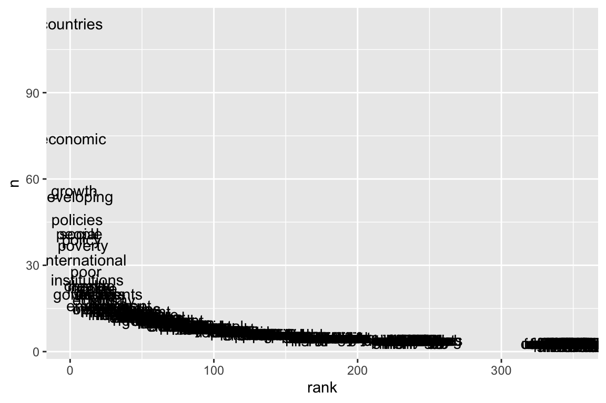
# Putting logarithmic scales on both axes reveals something interesting about the way that data is structured; this turns into a straight line.
ggplot(wordcounts) +
aes(x = rank, y = n, label = word) +
geom_point(alpha = .3, color = "grey") +
geom_text(check_overlap = TRUE) +
scale_x_continuous(trans = "log") +
scale_y_continuous(trans = "log") +
labs(title = "Zipf's Law",
subtitle="The log-frequency of a term is inversely correlated with the logarithm of its rank.")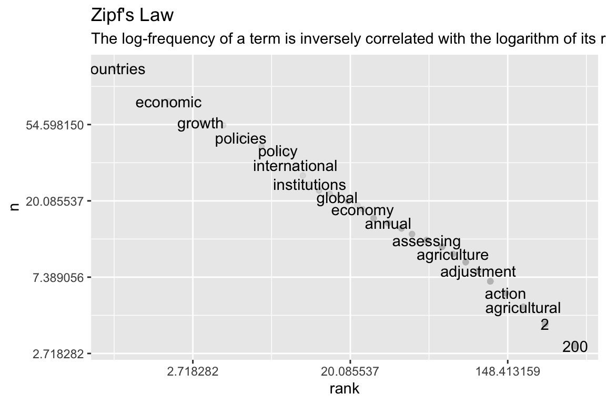
# ...the logarithm of rank decreases linearly with the logarithm of count
# This is “Zipf’s law:” the phenomenon means that the most common word is twice as common as the second most common word, three times as common as the third most common word, four times as common as the fourth most common word, and so forth.A2.b {WDRs’ Abstracts’} Analyzing word and document frequency: TF-IDF
—>>> [looking at tokenized abstracts ]
The goal is to quantify what a document is about. What is the document about?
- term frequency (tf) = how frequently a word occurs in a document… but there are words that occur many time and are not important
- term’s inverse document frequency (idf) = decreases the weight for commonly used words and increases the weight for words that are not used very much in a collection of documents.
- statistic tf-idf (= tf-idf) = tan alternative to using stopwords is the frequency of a term adjusted for how rarely it is used. [It measures how important a word is to a document in a collection (or corpus) of documents, but it is still a rule-of-thumb or heuristic quantity]
The inverse document frequency for any given term is defined as:
\[idf(\text{term}) = \ln{\left(\frac{n_{\text{documents}}}{n_{\text{documents containing term}}}\right)}\]
— Pre-process 4 TF-IDF
# PREP X TF-IDF
#paint(abs_all)
skimr::n_unique(abs_all$title)## [1] 44skimr::n_unique(abs_all$date_issued)## [1] 44# Count words (with stopwords)
temp <- abs_all %>%
unnest_tokens(output = word,
input = abstract,
to_lower = T, # otherwise cannot match the stop_words
strip_punc = TRUE) %>% #9769 = tot words
mutate(word = SnowballC::wordStem(word)) %>%
# other important pre-process step
# mutate(title = factor(title, ordered = TRUE)) %>%
# mutate(date_issued = factor(date_issued, ordered = TRUE)) %>%
# implicit group by ...
group_by(date_issued) %>%
# Count observations by group
count(word, sort = TRUE) %>% # 5860 # unique words
ungroup()
abs_words <- left_join(temp, abs_all, by = "date_issued")modo I) {LinkedIn GUY} Create a Word Frequency Table
# abs_words_freq <- abs_words %>%
# anti_join(stop_words, by= "word" ) %>%
# tidyr::pivot_wider(names_from = word, values_from = n, values_fill = 0)
#
# # skim(abs_words_freq)
#
# #Generate the Document Term matrix
# abs_words_freq_matrix <- as.matrix(abs_words_freq)
#
# abs_words_freq_matrix[ , 'gender']
#
# # .... uses {tm} modo II) {Julia Silge and David Robinson} tidytext::bind_tf_idf
The idea of tf-idf is to find the important words for
the content of each document by decreasing the weight for commonly
used words and increasing the weight for words that are not used very
much in a collection or corpus of documents. Calculating tf-idf
attempts to find the words that are important (i.e., common) in a text,
but not too common. Let’s do that now.
### --- abstracts with totals
# Calculate the total appearances of each words per doc
abs_total_words <- abs_words %>%
dplyr::group_by(title) %>%
dplyr::summarise(total = sum(n))
# Join the total appearances of each words per doc
abs_words_T <- left_join(abs_words, abs_total_words) %>%
select(date_issued,title,abstract, word, n, total )## Joining, by = "title"#paint(abs_words_T)
# The usual suspects are here, “the”, “and”, “to”, and so forth.
# ggplot(abs_words_T, aes(n/total, fill = title)) +
# geom_histogram(show.legend = FALSE) +
# xlim(NA, 0.01) +
# facet_wrap(~title, ncol = 2, scales = "free_y")
tidytext::bind_tf_idf: Calculate and bind the term frequency and inverse document frequency of a tidy text dataset, along with the product, tf-idf, to the dataset. Each of these values are added as columns. This function supports non-standard evaluation through the tidyeval framework.
abs_words_tf_idf <- abs_words_T %>%
#bind_tf_idf(tbl, term, document, n)
bind_tf_idf( word, title, n) %>% # 5860
# get rid of stopwords anyway &...
anti_join(stop_words, by = "word") %>% # 3703
# fileter most importantly weighted
# filter(tf_idf > 0.01 ) %>% # 2278
arrange(date_issued, desc(tf_idf))
abs_words_tf_idf## # A tibble: 3,726 × 9
## date_issued title abstract word n total tf idf tf_idf
## <dbl> <chr> <chr> <chr> <int> <int> <dbl> <dbl> <dbl>
## 1 1978 Prospects for Gro… This fi… clar… 1 88 0.0114 3.78 0.0430
## 2 1978 Prospects for Gro… This fi… link… 1 88 0.0114 3.78 0.0430
## 3 1978 Prospects for Gro… This fi… major 3 88 0.0341 1.15 0.0390
## 4 1978 Prospects for Gro… This fi… alle… 1 88 0.0114 3.09 0.0351
## 5 1978 Prospects for Gro… This fi… comp… 1 88 0.0114 3.09 0.0351
## 6 1978 Prospects for Gro… This fi… deal 1 88 0.0114 3.09 0.0351
## 7 1978 Prospects for Gro… This fi… inte… 1 88 0.0114 3.09 0.0351
## 8 1978 Prospects for Gro… This fi… econ… 3 88 0.0341 0.951 0.0324
## 9 1978 Prospects for Gro… This fi… pros… 2 88 0.0227 1.39 0.0315
## 10 1978 Prospects for Gro… This fi… back… 1 88 0.0114 2.69 0.0305
## # … with 3,716 more rows#paint(abs_words_tf_idf)Notice that idf and thus tf-idf are zero
for these extremely common words. These are all words that appear in all
docs, so the idf term (which will then be the natural log
of 1) is zero. > The inverse document frequency (and thus
tf-idf) is very low (near zero) for words that occur in
many of the documents in a collection; this is how this approach
decreases the weight for common words.
The inverse document frequency will be a higher number for words that occur in fewer of the documents in the collection.
Let’s look at recurring terms terms with high tf-idf in WDRs.
# wdr[ wdr$id %in% c("4391" ) , c("date_issued", "title" )]
# let's look specifically at "Gender Equality and Development"
tf_idf_2012 <- abs_words_tf_idf %>%
filter(date_issued == "2012") %>%
select(-total) %>%
arrange(desc(tf_idf))
# These words are, as measured by tf-idf, the most important to "Gender Equality and Development" and most readers would likely agree.
tf_idf_2012[tf_idf_2012$word %in% c("gender", "equality", "development") ,]## # A tibble: 1 × 8
## date_issued title abstract word n tf idf tf_idf
## <dbl> <chr> <chr> <chr> <int> <dbl> <dbl> <dbl>
## 1 2012 " Gender Equality and De… "The ma… gend… 13 0.0588 3.09 0.182# # A tibble: 3 × 7
# date_issued title word n tf idf tf_idf
# <chr> <chr> <chr> <int> <dbl> <dbl> <dbl>
# 1 2012 " Gender Equality and Development" gender 13 0.0588 3.09 0.182
# 2 2012 " Gender Equality and Development" equality 6 0.0271 3.78 0.103
# 3 2012 " Gender Equality and Development" development 10 0.0452 0 0 — TF-IDF tables for selected WDRs
Interestingly, some themes are recurrent in cycles (as per (Yusuf 2008)). So I wanted to check TF_IDF in these “subsets” of WDRs
Environment/Climate
#wdr[ wdr$id %in% c("5975", "4387" ) , c("date_issued", "title" )]
# SIMPLE TABLE WITH FILTER
tf_idf_1992_2010 <- abs_words_tf_idf %>%
dplyr::filter(date_issued %in% c("1992", "2010")) %>%
dplyr::filter(n > 1) %>%
select(-abstract) %>%
dplyr::arrange(date_issued, desc(tf_idf))
tf_idf_1992_2010 %>%
DT::datatable(.,
elementId = NULL,
filter = 'top', # Problem if there are empty cells !!!
extensions = 'Buttons',
options = list(columnDefs = list(list(targets = c(1, 2, 3), searchable = TRUE)),
pageLength = 50,
searchHighlight = TRUE,
dom = 'Bfrtip',
buttons = c('csv','excel','pdf'))) %>%
# helper functions
DT::formatRound(c('tf', 'idf', 'tf_idf'), 3) %>%
DT::formatStyle('tf_idf', backgroundColor = 'yellow') %>%
DT::formatStyle('tf_idf', color = styleInterval( 0.0114, c('black', 'red')) )# tf_idf_1992_2010 %>%
# # alternative with filters
# datatable(
# tf_idf_1992_2010,
# filter = 'top',
# options = list(columnDefs = list(list(targets = c(1, 2, 3), searchable = TRUE)),
# pageLength = 5
# )
# )Knowledge/data
# skim(abs_words_tf_idf$tf_idf)
# wdr[ wdr$id %in% c("5981", "35218" ) , c("date_issued", "title" )]
# SIMPLE TABLE WITH FILTER
tf_idf_1998_2021 <- abs_words_tf_idf %>%
dplyr::filter(date_issued %in% c("1998", "2021")) %>%
dplyr::filter(n > 1) %>%
select(-abstract) %>%
dplyr::arrange(date_issued, desc(tf_idf))
tf_idf_1998_2021 %>%
DT::datatable(.,
elementId = NULL,
filter = 'top', # Problem if there are empty cells !!!
extensions = 'Buttons',
options = list(columnDefs = list(list(targets = c(1, 2, 3), searchable = TRUE)),
pageLength = 50,
searchHighlight = TRUE,
dom = 'Bfrtip',
buttons = c('csv','excel','pdf'))) %>%
# helper functions
DT::formatRound(c('tf', 'idf', 'tf_idf'), 3) %>%
DT::formatStyle('tf_idf', backgroundColor = 'yellow') %>%
DT::formatStyle('tf_idf', color = styleInterval( 0.0114, c('red', 'blue')) )# tf_idf_1992_2010 %>%
# # alternative with filters
# datatable(
# tf_idf_1992_2010,
# filter = 'top',
# options = list(columnDefs = list(list(targets = c(1, 2, 3), searchable = TRUE)),
# pageLength = 5
# )
# )Poverty
# wdr[ wdr$id %in% c("5961", "5963", "5973", "11856" ) , c("date_issued", "title" )]
# SIMPLE TABLE WITH FILTER
tf_idf_poverty <- abs_words_tf_idf %>%
dplyr::filter(date_issued %in% c("1978", "1980", "1990", "2001")) %>%
dplyr::filter(n > 1) %>%
select(-abstract) %>%
dplyr::arrange(date_issued, desc(tf_idf))
tf_idf_poverty %>%
DT::datatable(.,
elementId = NULL,
filter = 'top', # Problem if there are empty cells !!!
extensions = 'Buttons',
options = list(columnDefs = list(list(targets = c(1, 2, 3), searchable = TRUE)),
pageLength = 50,
searchHighlight = TRUE,
dom = 'Bfrtip',
buttons = c('csv','excel','pdf'))) %>%
# helper functions
DT::formatRound(c('tf', 'idf', 'tf_idf'), 3) %>%
DT::formatStyle('tf_idf', backgroundColor = 'yellow') %>%
DT::formatStyle('tf_idf', color = styleInterval( 0.0114, c('red', 'blue')) )# tf_idf_1992_2010 %>%
# # alternative with filters
# datatable(
# tf_idf_1992_2010,
# filter = 'top',
# options = list(columnDefs = list(list(targets = c(1, 2, 3), searchable = TRUE)),
# pageLength = 5
# )
# )— Word frequency histogram
# let's eliminate stopwords
abs_words2 <- anti_join(x = abs_words_T, y = stop_words, by= "word" ) %>%
filter(n > 1) %>%
select(date_issued, title, word, n, total)
abs_words2 ## # A tibble: 730 × 5
## date_issued title word n total
## <dbl> <chr> <chr> <int> <int>
## 1 2013 " Jobs" job 17 407
## 2 2021 " Data for Better Lives" data 17 314
## 3 2014 " Risk and Opportunity—Managing Risk for Devel… risk 16 465
## 4 1993 " Investing in Health" heal… 14 378
## 5 1998 " Knowledge for Development" know… 14 194
## 6 2012 " Gender Equality and Development" gend… 13 221
## 7 2013 " Jobs" ar 12 407
## 8 2008 " Agriculture for Development" agri… 11 220
## 9 2012 " Gender Equality and Development" deve… 10 221
## 10 1999 " Entering the 21st Century" deve… 9 249
## # … with 720 more rows# paint(abs_words2)
# here there is one row for each word-WDR(abs) combination
# `n` is the number of times that word is used in that book and
# `total` is the total words in that book.frequency = let’s look at the distribution
of n/total for each doc, the number of times a word appears
in a doc divided by the total number of terms (words) in that doc
I actually use
ninstead because I have only small numbers having used the abstracts alone
one <- abs_words2 %>%
filter ( date_issued == "2021") %>%
mutate (freq = n/total)
ggplot(data = one,
mapping = aes(x = n, fill = title)) + # y axis not needed ... R will count
geom_histogram(binwidth = 1,
color = "white") +
scale_y_continuous(breaks= pretty_breaks()) +
xlim(0, 20) +
labs(# title = title,
x = "frequency",
y = "N of words @ that frequency") +
guides( fill = "none")## Warning: Removed 2 rows containing missing values (geom_bar).
# # skim(one$freq)
# ggplot(data = one,
# mapping = aes(x = freq, fill = title)) + # y axis not needed ... R will count
# geom_histogram(binwidth = 1,
# color = "white") +
# scale_y_continuous(breaks= pretty_breaks()) +
# xlim(0, 0.1) +
# labs(# title = title,
# x = "frequency",
# y = "N of words @ that frequency") +
# guides( fill = "none")# overlayed mess!
ggplot(abs_words2, aes(n, fill = title)) +
geom_histogram(binwidth = 1,
color = "white") +
scale_y_continuous(breaks= pretty_breaks()) +
xlim(0, 20) +
labs(#title = ~date_issued,
x = "frequency",
y = "N of words @ that frequency") +
guides( fill = "none")ggplot(abs_words2, aes(n, fill = title)) +
geom_histogram(binwidth = 1,
color = "white") +
scale_y_continuous(breaks= pretty_breaks()) +
xlim(0, 20) +
labs(#title = ~date_issued,
x = "frequency",
y = "N of words @ that frequency") +
facet_wrap( ~date_issued ) + # , ncol = 2, scales = "free_y")
guides( fill = "none") # way to turn legend off— Multiple plots of Word Freq with [purrr]
# ---- NON Capisco
# # Preferred approach
# histos <- abs_words2 %>%
# group_by(title) %>%
# nest() %>%
# mutate(plot = map2(data, title,
# ~ggplot(data = .x , aes(n/total, fill = title)) +
# geom_histogram( show.legend = FALSE) +
# xlim(NA, 0.05) +
# # ggtitle(.y) +
# ylab("Words Frequency") +
# xlab("Distribution per WDR title")))
#
# histos$plot[[1]]
# ---- Capisco
# https://stackoverflow.com/questions/60671725/ggplot-add-title-based-on-the-variable-in-the-dataframe-used-for-plotting
list_plot <- abs_words2 %>%
dplyr::group_split(date_issued) %>% # Split data frame by groups
map(~ggplot(.,
mapping = aes(x = n, fill = title)) +
geom_histogram(binwidth = 1,
color = "white") +
scale_y_continuous(breaks= pretty_breaks()) + # integer ticks {scales}
xlim(0, 18) + # max of freq is 17
labs(title = .$date_issued,
x = "frequency",
y = "N of words @ that frequency")
)
list_plot[[1]]## Warning: Removed 2 rows containing missing values (geom_bar).
list_plot[[44]]## Warning: Removed 2 rows containing missing values (geom_bar).
#grid.arrange(grobs = list_plot, ncol = 1)————– [TITLES ?] ——————
A3.a {WDRs’ TITLES’} tokenization
Following: http://varianceexplained.org/r/hn-trends/
# unnest titles
title_words <- wdr %>% # 44 obs X 5 var
mutate (year = date_issued) %>%
# isolate necessary
dplyr::select(id, year, decade, title, altmetric ) %>% # isolate titles
arrange(desc(year)) %>%
# (redundant) Select only unique/distinct rows from a data frame
# dplyr::distinct(title, .keep_all = TRUE) %>%
# ----- tidytext’s unnest_tokens function = {turn titles in individual words}
unnest_tokens(output = word,
input = title,
drop = FALSE, # Whether original input column should get dropped
to_lower = T, # (implicit) otherwise cannot match the stop_words
strip_punc = TRUE) %>% # 196 obs
# ---- token processing
# [Optional] stems words
mutate(word = SnowballC::wordStem(word)) %>% # **
# [Optional] sometimes needed to graph
mutate(title = factor(title, ordered = TRUE)) %>%
mutate(year = factor(year, ordered = TRUE)) %>% # 196 obs X 5 var
# creates a data frame with one row per word per post!!!
# Select only unique/distinct rows from a data frame (if not unique keep first) | keep all vars
distinct(id, word, .keep_all = TRUE) %>% # (redundant, no repetition of words in title)
# delete stop words (also previously stemmed)
anti_join(stop_words_stem, by = "word") %>% # ** # 101 obs | 95 if stemmed
filter(str_detect(word, "[^\\d]")) %>%
# calculate totals by word across all titles (eg agricultur = in 3 WDR)
group_by(word) %>%
mutate(word_total = n()) %>%
ungroup() — Plot/save most common words in ALL 44 TITLES
# this is the same as title_words$word_total, but just the totals NO REPETITION
word_counts <- title_words %>%
# Count observations by group(ed words)
count(word, sort = TRUE)
# plot
p_most_common_word_in_title <- word_counts %>%
head(30) %>%
# filter ( n >1) %>%
mutate(word = reorder(word, n)) %>%
ggplot(aes(word, n)) +
# geom_col() uses stat_identity(): it leaves the data as is.
geom_col(fill = "lightblue") +
scale_y_continuous(labels = comma_format()) +
coord_flip() +
labs(title = "50 most common words in 44 World Development Reports' titles",
subtitle = "[stemmed & stop words removed]" #, y = "# of uses"
)
p_most_common_word_in_title %T>%
print() %T>%
ggsave(., filename = here("analysis", "output", "figures", "most_common_word_in_title.pdf"),
#width = 4, height = 2.25, units = "in",
device = cairo_pdf) %>%
ggsave(., filename = here("analysis", "output", "figures", "most_common_word_in_title.png"),
#width = 4, height = 2.25, units = "in",
type = "cairo", dpi = 300) ## Saving 6 x 4 in image
## Saving 6 x 4 in image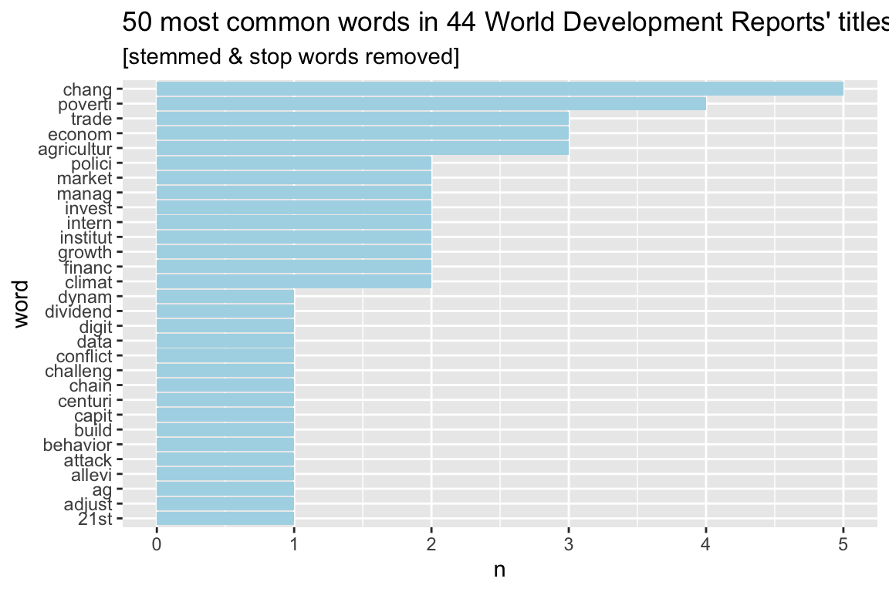
What are specific words that get a high altmetric ? https://youtu.be/C69QyycHsgE
alt_title_words <- title_words %>%
# Count observations by group(ed words)
add_count(word ) %>%
group_by(word) %>%
summarise(median_alt = median (altmetric),
# compresses the scale and you go up by smaller increments
geometric_mean_alt = exp(mean(log(altmetric + 1))) -1,
occurrences = n()) %>%
arrange(desc(median_alt))
alt_title_words## # A tibble: 78 × 4
## word median_alt geometric_mean_alt occurrences
## <chr> <dbl> <dbl> <int>
## 1 digit 3066 3066 1
## 2 dividend 3066 3066 1
## 3 education' 1577 1577 1
## 4 learn 1577 1577 1
## 5 promis 1577 1577 1
## 6 realiz 1577 1577 1
## 7 behavior 989 989 1
## 8 mind 989 989 1
## 9 societi 989 989 1
## 10 ag 792 792 1
## # … with 68 more rows— Plot/save most common words in ALL 44 TITLES - over time
What words and topics have become more frequent, or less frequent, over time? These could give us a sense of the changing focus in dev econ, and let us predict what topics will continue to grow in relevance.
To achieve this, we’ll first count the occurrences of words in titles by decades
wdr_decade <- wdr %>%
mutate (year = date_issued) %>%
# isolate necessary
dplyr::select(id, year, decade, title ) %>%
arrange(desc(year))
# 1) obtain "decade_total"
title_per_decade <- wdr_decade %>%
group_by(decade) %>%
summarize(decade_total = n()) %>%
ungroup()
# 2) obtain count "n" <-- (group BY word*decade)
word_decade_counts <- title_words %>%
# filter(word_total >= 1000) %>%
count(word, decade) %>%
complete(word, decade, fill = list(n = 0)) %>%
# join with 1)
inner_join(title_per_decade, by = "decade") %>%
mutate(percent = n / decade_total) %>%
# weird step to re-attach year
inner_join(title_words, by = c("word", "decade")) %>%
select (-id, -title, word, word_total, decade, n, decade_total, percent, year) %>%
mutate (year = as.character(year)) %>%
mutate (year = as.numeric(year))
paint(word_decade_counts)## tibble [100, 8]
## word chr 21st adjust ag agricultur agricultur agric~
## decade chr 1990s 1980s 2020s 1980s 1980s 2000s
## n int 1 1 1 2 2 1
## decade_total int 10 10 3 10 10 9
## percent dbl 0.1 0.1 0.333333 0.2 0.2 0.111111
## year dbl 1999 1981 2020 1986 1982 2008
## altmetric dbl 11 NA 792 4 4 98
## word_total int 1 1 1 3 3 3————– {START: troppo difficile} ——————
# library(broom)
#
# mod <- ~ glm(cbind(n, decade_total - n) ~ decade, ., family = "binomial")
#
# slopes <- word_decade_counts %>%
# nest(-word) %>%
# mutate(model = map(data, mod)) %>%
# unnest(map(model, tidy)) %>%
# filter(term == "year") %>%
# arrange(desc(estimate))
#
# slopestibble [100, 7] word chr 21st adjust ag agricultur agricultur agric~ word_total int 1 1 1 3 3 3 = [how many times word appear in titles ] decade chr 1990s 1980s 2020s 1980s 1980s 2000s n int 1 1 1 2 2 1 = [how many times word appear in titles ] decade_total int 10 10 3 10 10 9 = [how many doc per decade ] percent dbl 0.1 0.1 0.333333 0.2 0.2 0.111111 = [% of doc per decade mentioning the word] year dbl 1999 1981 2020 1986 1982 2008
simple lineover time
word_decade_counts %>%
filter(word_total > 2) %>%
ggplot(aes(year, percent, color = word)) +
geom_point() +
scale_y_continuous(labels = percent_format()) +
labs(x = "Hour of day (EST)",
y = "% of tweets",
color = "")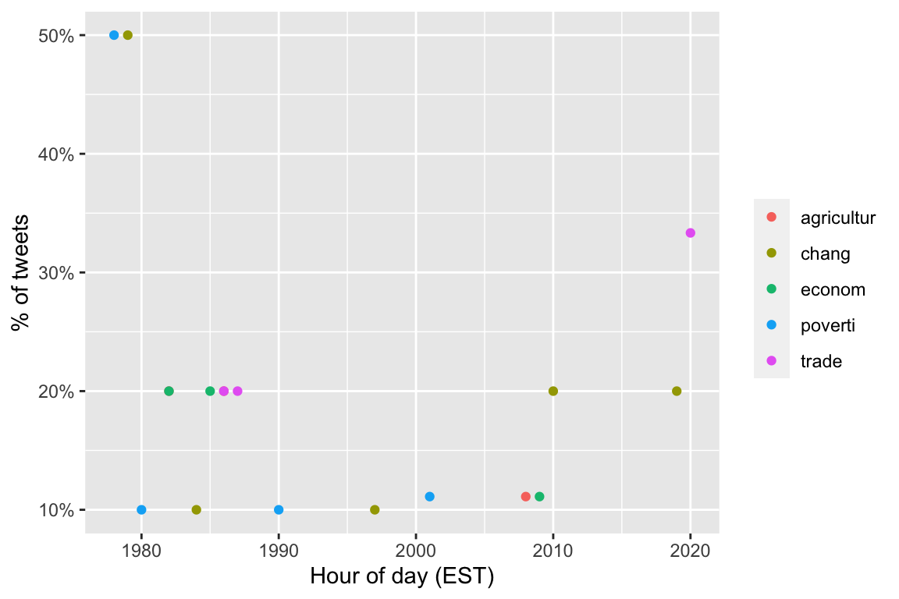
#### ————– {END: troppo difficile} ——————A3.b {WDRs’ TITLES’} word clusters
I want to consider clusters, but I don’t want to guess them I want to draw them from the data
# hereI want to unstemm the title words
# unnest titles
title_words2 <- wdr %>% # 44 obs X 5 var
mutate (year = date_issued) %>%
# isolate necessary
dplyr::select(id, year, decade, title, altmetric ) %>% # isolate titles
arrange(desc(year)) %>%
# (redundant) Select only unique/distinct rows from a data frame
# dplyr::distinct(title, .keep_all = TRUE) %>%
# ----- tidytext’s unnest_tokens function = {turn titles in individual words}
unnest_tokens(output = word,
input = title,
drop = FALSE, # Whether original input column should get dropped
to_lower = T, # (implicit) otherwise cannot match the stop_words
strip_punc = TRUE) %>% # 196 obs
# ---- token processing
# [Optional] stems words
# mutate(word = SnowballC::wordStem(word)) %>% # **
# [Optional] sometimes needed to graph
mutate(title = factor(title, ordered = TRUE)) %>%
mutate(year = factor(year, ordered = TRUE)) %>% # 196 obs X 5 var
# creates a data frame with one row per word per post!!!
# Select only unique/distinct rows from a data frame (if not unique keep first) | keep all vars
distinct(id, word, .keep_all = TRUE) %>% # (redundant, no repetition of words in title)
# delete stop words (also previously stemmed)
anti_join(stop_words_stem, by = "word") %>% # ** # 101 obs | 95 if stemmed
filter(str_detect(word, "[^\\d]")) %>%
# calculate totals by word across all titles (eg agricultur = in 3 WDR)
group_by(word) %>%
mutate(word_total = n()) %>%
ungroup()
# I will also make the alt alt_title_words2
alt_title_words2 <- title_words2 %>%
# Count observations by group(ed words)
add_count(word ) %>%
group_by(word) %>%
summarise(median_alt = median (altmetric),
# compresses the scale and you go up by smaller increments
geometric_mean_alt = exp(mean(log(altmetric + 1))) -1,
occurrences = n()) %>%
arrange(desc(median_alt))corr GRAPHS
# get pairwise correlation with {widyr}
top_corr <- title_words2 %>%
select (id, word) %>%
widyr::pairwise_cor(word, id, sort = TRUE) %>%
head(150)
#str(top_corr)
set.seed(2022)
# graph them
top_corr %>%
graph_from_data_frame() %>%
ggraph() +
geom_edge_link() +
geom_node_point() +
geom_node_text(aes(label = name), repel = TRUE) + theme_void()## Using `stress` as default layout## Warning: ggrepel: 34 unlabeled data points (too many overlaps). Consider
## increasing max.overlaps
Now I want to add some metrics to the graph, so I take
alt_title_words which had some calculated things in it
vertices <- alt_title_words2 %>%
# filter words that have correlation
filter(word %in% top_corr$item1 |
word %in% top_corr$item2)
set.seed(2022)
# graph them
# here I add what clusters get more altmetric than others
top_corr %>%
graph_from_data_frame(vertices = vertices) %>% # df !
ggraph() +
geom_edge_link() +
geom_node_point(aes(size = occurrences,
color = geometric_mean_alt)) + # aes !
geom_node_text(aes(label = name), repel = TRUE) +
scale_color_gradient2(low = "blue",
high = "red",
midpoint = 1000) +
theme_void() +
labs(title = "what's hot in WDR titles?",
subtitle = "Color shows the geom mean of altmetric score on WDR titles containing this word",
size = "# of occurrences",
color = "Altmetric (mean)") ## Using `stress` as default layout## Warning: ggrepel: 38 unlabeled data points (too many overlaps). Consider
## increasing max.overlaps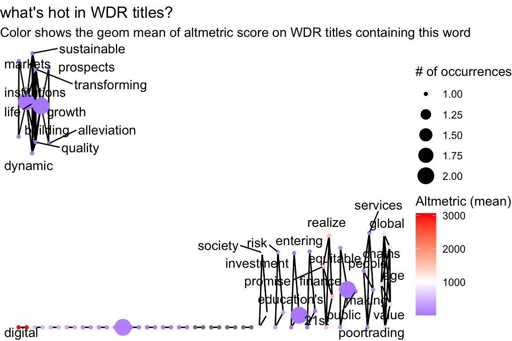
Predicting altmetric based on title + topic
# some reshaping
title_word_matrix <- title_words2 %>%
distinct(id, word, altmetric) %>%
# turn into a sparse matrix
cast_sparse(id, word)
dim(title_word_matrix)## [1] 44 89# ... ————– [SUBJECTS & TOPICS !!!] ——————
must spread all_subj so that I have colum = “agric” row equal 0,1 thenn
#noquote(names(wdr))
wdr_subj <- wdr %>%
# delete subj_
select (date_issued, decade, title, abstract,
altmetric, all_topic, all_subj)
# rownames_to_column(wdr_subj, 'all_subj') %>%
# separate_rows(col) %>%
# filter(col !="") %>%
# count( all_subj, col) %>%
# spread(col, n, fill = 0) %>%
# ungroup() %>%
# select(-all_subj)
# # base
# x <- strsplit(as.character(wdr_subj$all_subj), ",\\s?") # split the strings
# lvl <- unique(unlist(x)) # get unique elements
# x <- lapply(x, factor, levels = lvl) # convert to factor
# subj_df <- as_tibble(t(sapply(x, table)) ) # count elements and transpose
# # data.table
# library(data.table)
# wdr_subj2 <- setDT(wdr_subj)[, tstrsplit(all_subj, ", |,")]
# dcast(melt(wdr_subj2, measure = names(wdr_subj2)), rowid(variable) ~ value, length)
library(splitstackshape)
wdr_subj2 <- splitstackshape::cSplit_e(wdr_subj, "all_subj", ",", mode = "binary", type = "character", fill = 0)
wdr_subj3 <- splitstackshape::cSplit_e(wdr_subj, "all_topic", ",", mode = "binary", type = "character", fill = 0)— which SUBJ are the most common?
wdr_subj2 %>%
# summarise whole bunch of columns with sum
summarise_at(vars(starts_with("all_subj_")), sum)## all_subj_access to finance all_subj_access to knowledge
## 1 1 1
## all_subj_accountability all_subj_accounting
## 1 1 1
## all_subj_acute respiratory infection all_subj_adolescents
## 1 1 1
## all_subj_adult roles all_subj_adulthood all_subj_agricultural growth
## 1 1 1 1
## all_subj_agricultural production all_subj_agricultural productivity
## 1 2 1
## all_subj_agricultural protection all_subj_agricultural sectors
## 1 1 1
## all_subj_agriculture all_subj_aids epidemic all_subj_alternative policies
## 1 3 1 1
## all_subj_asset allocation all_subj_asset maintenance all_subj_bankruptcy
## 1 1 1 1
## all_subj_barriers to competition all_subj_behavioral economics
## 1 1 1
## all_subj_burden of disease all_subj_cancers all_subj_capacity building
## 1 1 1 1
## all_subj_capital flows all_subj_capital inflows all_subj_capture
## 1 2 1 1
## all_subj_carbon all_subj_carbon cycle all_subj_carbon dioxide
## 1 1 1 1
## all_subj_changing economies all_subj_child health all_subj_citizen agency
## 1 1 1 1
## all_subj_citizen engagement all_subj_civic innovation all_subj_civil society
## 1 1 1 1
## all_subj_climate change all_subj_cognitive skills all_subj_cohesion
## 1 3 1 1
## all_subj_collective all_subj_collective action all_subj_commercial banking
## 1 1 1 1
## all_subj_commercial banks all_subj_commercial energy all_subj_commitment
## 1 1 1 1
## all_subj_communications technologies all_subj_community health
## 1 1 1
## all_subj_community participation all_subj_comparative advantage
## 1 1 1
## all_subj_competition policy all_subj_competitive pressures
## 1 1 1
## all_subj_connectivity all_subj_contestability all_subj_contract enforcement
## 1 1 1 1
## all_subj_cooperation all_subj_coordination all_subj_coronavirus
## 1 1 1 1
## all_subj_corruption all_subj_countercyclical policies
## 1 1 1
## all_subj_country case studies all_subj_covid-19 all_subj_credibility
## 1 1 1 1
## all_subj_credit crunch all_subj_creditors all_subj_crisis
## 1 1 1 1
## all_subj_data governance all_subj_data policy all_subj_data privacy
## 1 1 1 1
## all_subj_data protection all_subj_data regulation all_subj_debt
## 1 1 1 5
## all_subj_debt management all_subj_debt overhang all_subj_debt relief
## 1 1 1 1
## all_subj_debt sustainability all_subj_debtors all_subj_decentralization
## 1 1 1 2
## all_subj_decentralization in government all_subj_demographic indicators
## 1 1 1
## all_subj_developed countries all_subj_developing countries
## 1 1 5
## all_subj_development all_subj_development assistance
## 1 1 2
## all_subj_development indicators all_subj_development policy
## 1 3 1
## all_subj_development process all_subj_digital development
## 1 1 1
## all_subj_digital dividends all_subj_digital economy
## 1 1 1
## all_subj_digital inclusion all_subj_digital infrastructure
## 1 1 1
## all_subj_digital technologies all_subj_digital technology
## 1 1 2
## all_subj_disadvantaged groups all_subj_discrimination against women
## 1 1 1
## all_subj_dispute resolution all_subj_distribution (economic theory)
## 1 1 1
## all_subj_donors all_subj_drinking water and sanitation
## 1 2 2
## all_subj_early childhood all_subj_early childhood investment
## 1 1 1
## all_subj_economic activity all_subj_economic concentration
## 1 1 1
## all_subj_economic conditions all_subj_economic development
## 1 2 12
## all_subj_economic geography all_subj_economic growth
## 1 1 9
## all_subj_economic indicators all_subj_economic integration
## 1 1 3
## all_subj_economic opportunities all_subj_economic outcomes
## 1 1 1
## all_subj_economic performance all_subj_economic policies
## 1 1 2
## all_subj_economic prosperity all_subj_economic recovery
## 1 1 1
## all_subj_economic shocks all_subj_economic systems all_subj_economics
## 1 1 1 2
## all_subj_economists all_subj_ecosystem all_subj_ecosystem management
## 1 1 1 1
## all_subj_education all_subj_education for all all_subj_education management
## 1 4 1 1
## all_subj_education spending all_subj_education systems
## 1 1 3
## all_subj_elite bargains all_subj_emission all_subj_employment
## 1 1 1 2
## all_subj_employment rates all_subj_empowerment all_subj_endowments
## 1 1 2 1
## all_subj_energy efficiency all_subj_environment
## 1 1 2
## all_subj_environmental policies all_subj_environmental policy
## 1 1 1
## all_subj_environmental protection all_subj_environmental quality
## 1 1 1
## all_subj_equal opportunities all_subj_equal opportunity
## 1 1 2
## all_subj_equal treatment principle all_subj_equality all_subj_equity
## 1 1 1 2
## all_subj_ethnic groups all_subj_exchange rates all_subj_expenditure
## 1 1 1 2
## all_subj_expenditures all_subj_exports all_subj_expropriation
## 1 1 1 1
## all_subj_external debt all_subj_external finance all_subj_externalities
## 1 1 1 1
## all_subj_extreme poverty all_subj_families all_subj_financial crisis
## 1 1 1 1
## all_subj_financial fragility all_subj_financial inclusion
## 1 1 1
## all_subj_financial institutions all_subj_financial markets
## 1 1 2
## all_subj_financial resilience all_subj_financial stability
## 1 1 1
## all_subj_financial structure all_subj_financial system
## 1 1 1
## all_subj_financial systems all_subj_financial technology
## 1 1 1
## all_subj_fiscal deficits all_subj_fiscal space all_subj_flexibility
## 1 1 1 1
## all_subj_food all_subj_foreign aid all_subj_foreign capital
## 1 1 1 3
## all_subj_foreign debt all_subj_foreign direct investment
## 1 1 1
## all_subj_free markets all_subj_fuel all_subj_future of work
## 1 1 1 1
## all_subj_future population all_subj_future prospects all_subj_gender
## 1 1 2 1
## all_subj_gig economy all_subj_global integration all_subj_global value chain
## 1 1 1 1
## all_subj_global value chains all_subj_globalization all_subj_governance
## 1 1 2 2
## all_subj_government intervention all_subj_government role all_subj_greenhouse
## 1 1 1 1
## all_subj_greenhouse gas all_subj_gross domestic product
## 1 1 1
## all_subj_gross national product all_subj_growth and poverty
## 1 2 1
## all_subj_growth patterns all_subj_growth projections
## 1 1 1
## all_subj_guaranteed social minimum all_subj_gvc integration all_subj_health
## 1 1 1 1
## all_subj_health care all_subj_health care delivery
## 1 2 1
## all_subj_health care systems all_subj_health interventions
## 1 1 1
## all_subj_health outcomes all_subj_health policy all_subj_health services
## 1 1 1 2
## all_subj_healthy choices all_subj_higher energy prices all_subj_highways
## 1 1 1 1
## all_subj_human capital all_subj_human capital index
## 1 5 1
## all_subj_human development all_subj_human factors design
## 1 4 1
## all_subj_human welfare all_subj_hyperspecialization all_subj_ict
## 1 1 1 1
## all_subj_ict and governance all_subj_ict and growth all_subj_ict and jobs
## 1 1 1 1
## all_subj_ict4d all_subj_iivelihood all_subj_immunization
## 1 1 1 1
## all_subj_incentive structure all_subj_incentives all_subj_income
## 1 1 1 8
## all_subj_income generation all_subj_income growth all_subj_individuals
## 1 1 1 1
## all_subj_industrial countries all_subj_industrial policy
## 1 2 1
## all_subj_industrialization all_subj_inefficiency all_subj_inequalities
## 1 3 2 1
## all_subj_inequality all_subj_inflation all_subj_informality
## 1 1 1 2
## all_subj_information and communication technologies
## 1 1
## all_subj_information and communication technology
## 1 1
## all_subj_information technology all_subj_infrastructure investment
## 1 1 1
## all_subj_infrastructure planning all_subj_innovations
## 1 1 1
## all_subj_institution building all_subj_institutional capacity
## 1 3 1
## all_subj_institutional change all_subj_institutional economics
## 1 1 1
## all_subj_institutional framework all_subj_institutional transformation
## 1 1 1
## all_subj_insurance all_subj_interest rates
## 1 1 4
## all_subj_intergenerational mobility all_subj_international bank
## 1 1 6
## all_subj_international capital all_subj_international development
## 1 2 1
## all_subj_international economics all_subj_international economy
## 1 1 2
## all_subj_international influence all_subj_international trade
## 1 1 4
## all_subj_internet all_subj_investing all_subj_investment climate
## 1 1 1 1
## all_subj_investment climate surveys all_subj_job creation all_subj_jobs
## 1 1 1 2
## all_subj_know-how all_subj_knowledge for development all_subj_knowledge gaps
## 1 1 1 1
## all_subj_labor all_subj_labor demand all_subj_labor force
## 1 1 1 2
## all_subj_labor market all_subj_labor markets all_subj_labor policies
## 1 1 1 1
## all_subj_labor productivity all_subj_labor regulations
## 1 1 1
## all_subj_learning crisis all_subj_legal institutions all_subj_life expectancy
## 1 1 1 1
## all_subj_lifelong learning all_subj_living standards
## 1 1 4
## all_subj_livving standards all_subj_loan defaults all_subj_localization
## 1 1 1 1
## all_subj_logging all_subj_low-income countries all_subj_macroeconomic policy
## 1 1 1 3
## all_subj_macroeconomic risk all_subj_macroeconomic stability
## 1 1 1
## all_subj_macroprudential regulation all_subj_managing risk
## 1 1 1
## all_subj_market competition all_subj_market efficiency all_subj_market forces
## 1 1 1 2
## all_subj_market integration all_subj_media all_subj_mercantilism
## 1 1 1 1
## all_subj_microenterprises all_subj_middle-income trap all_subj_midwifery
## 1 1 1 1
## all_subj_millennium development goals all_subj_minimum wage
## 1 2 1
## all_subj_mortality all_subj_national debates all_subj_national risk board
## 1 2 1 1
## all_subj_natural resources all_subj_nongovernmental organizations
## 1 2 1
## all_subj_norms all_subj_nudge all_subj_nutrition all_subj_oceans all_subj_oil
## 1 1 1 2 1 2
## all_subj_oil exporters all_subj_opec all_subj_opportunity
## 1 1 1 1
## all_subj_option value all_subj_organization of petroleum exporting countries
## 1 1 1
## all_subj_outcomes all_subj_pace of population growth all_subj_pandemic impact
## 1 1 1 1
## all_subj_pandemic response all_subj_per capita income
## 1 1 1
## all_subj_per capita incomes all_subj_perverse subsidies all_subj_petroleum
## 1 1 1 1
## all_subj_petroleum exporting countries all_subj_platform economy
## 1 1 1
## all_subj_platform firm all_subj_platform marketplace all_subj_policies
## 1 1 1 1
## all_subj_policy design all_subj_policy response all_subj_political economy
## 1 1 1 2
## all_subj_political participation all_subj_politics all_subj_poor people
## 1 1 1 1
## all_subj_population change all_subj_population data
## 1 1 1
## all_subj_population growth all_subj_population impact all_subj_poverty
## 1 2 1 2
## all_subj_poverty incidence all_subj_poverty mitigation
## 1 1 1
## all_subj_poverty reduction all_subj_poverty reduction strategies
## 1 4 2
## all_subj_poverty severity all_subj_poverty targeted programs
## 1 1 1
## all_subj_primary education all_subj_primary energy
## 1 2 1
## all_subj_primary energy production all_subj_primary energy supply
## 1 1 1
## all_subj_private investments all_subj_private sector development
## 1 1 1
## all_subj_pro-poor growth all_subj_producers all_subj_productivity
## 1 1 1 7
## all_subj_productivity growth all_subj_property rights all_subj_prosperity
## 1 1 1 1
## all_subj_protectionism all_subj_psychological all_subj_public administration
## 1 1 1 1
## all_subj_public finance all_subj_public goods all_subj_public health
## 1 1 3 2
## all_subj_public sector management all_subj_public service delivery
## 1 2 1
## all_subj_public service reform all_subj_public-private partnership
## 1 1 1
## all_subj_quality of life all_subj_railway all_subj_rapid population growth
## 1 2 1 1
## all_subj_recession all_subj_reform policy all_subj_repayments
## 1 1 1 1
## all_subj_resilience all_subj_responsive government
## 1 1 1
## all_subj_revenue mobilization all_subj_risk all_subj_risk management
## 1 1 1 3
## all_subj_risk management tools all_subj_risk prevention all_subj_risk sharing
## 1 1 1 1
## all_subj_roads all_subj_safety net all_subj_safety nets all_subj_sanitation
## 1 1 1 4 1
## all_subj_school management all_subj_schools all_subj_secondary education
## 1 1 1 1
## all_subj_security all_subj_service delivery all_subj_services
## 1 1 2 2
## all_subj_sex workers all_subj_shared prosperity all_subj_skill shortages
## 1 1 1 1
## all_subj_skills all_subj_skills gap all_subj_slum clearance
## 1 1 1 1
## all_subj_social assistance programs all_subj_social cohesion
## 1 1 2
## all_subj_social conditions all_subj_social inclusion
## 1 1 1
## all_subj_social indicators all_subj_social institutions all_subj_social norms
## 1 1 1 1
## all_subj_social policy all_subj_social protection
## 1 1 2
## all_subj_social protection systems all_subj_social transformation
## 1 1 1
## all_subj_societies all_subj_society all_subj_socio-economic environment
## 1 1 1 1
## all_subj_sociobehavioral skills all_subj_socioemotional skills
## 1 1 1
## all_subj_sovereign debt all_subj_state action all_subj_state capacity
## 1 1 1 1
## all_subj_sustainable development all_subj_tax reform all_subj_tax revenues
## 1 1 1 1
## all_subj_taxation all_subj_technical education all_subj_technological change
## 1 1 1 3
## all_subj_technology transfer all_subj_telecommunications services
## 1 1 1
## all_subj_temperature anomalies all_subj_text all_subj_trade
## 1 1 1 1
## all_subj_trade agreements all_subj_trade barriers
## 1 1 1
## all_subj_trade liberalization all_subj_tradeoffs all_subj_training
## 1 1 1 1
## all_subj_transnationalism all_subj_transparency all_subj_transport
## 1 1 1 1
## all_subj_unemployed all_subj_unemployment all_subj_union
## 1 1 2 1
## all_subj_urban development finance all_subj_value added tax all_subj_violence
## 1 1 1 1
## all_subj_vulnerability all_subj_wage levels all_subj_wages
## 1 2 1 1
## all_subj_water scarcity all_subj_water utilization
## 1 1 1
## all_subj_women's empowerment all_subj_work all_subj_workers
## 1 1 1 2
## all_subj_working conditions all_subj_world bank
## 1 1 1
## all_subj_world development indicators all_subj_world economy
## 1 2 3
## all_subj_young people all_subj_young people's transition all_subj_young women
## 1 1 1 1
## all_subj_youth all_subj_youth health all_subj_youth organizations
## 1 1 1 1
## all_subj_youth participation all_subj_youth policy all_subj_youth population
## 1 1 1 1
## all_subj_youth unemployment all_subj_youth workers
## 1 1 1# most popular AFTER RESHAPING
wdr_subj_gathered <- wdr_subj2 %>%
# summarise whole bunch of columns with sum
gather(subj, value,(starts_with("all_subj_"))) %>%
mutate(subj = str_remove(subj, "all_subj_")) %>%
filter (value ==1)
wdr_subj_gathered %>%
count(subj, sort = TRUE)## subj n
## 1 economic development 12
## 2 economic growth 9
## 3 income 8
## 4 productivity 7
## 5 international bank 6
## 6 debt 5
## 7 developing countries 5
## 8 human capital 5
## 9 education 4
## 10 human development 4
## 11 interest rates 4
## 12 international trade 4
## 13 living standards 4
## 14 poverty reduction 4
## 15 safety nets 4
## 16 agriculture 3
## 17 climate change 3
## 18 development indicators 3
## 19 economic integration 3
## 20 education systems 3
## 21 foreign capital 3
## 22 industrialization 3
## 23 institution building 3
## 24 macroeconomic policy 3
## 25 public goods 3
## 26 risk management 3
## 27 technological change 3
## 28 world economy 3
## 29 agricultural production 2
## 30 capital flows 2
## 31 decentralization 2
## 32 development assistance 2
## 33 digital technology 2
## 34 donors 2
## 35 drinking water and sanitation 2
## 36 economic conditions 2
## 37 economic policies 2
## 38 economics 2
## 39 employment 2
## 40 empowerment 2
## 41 environment 2
## 42 equal opportunity 2
## 43 equity 2
## 44 expenditure 2
## 45 financial markets 2
## 46 future prospects 2
## 47 globalization 2
## 48 governance 2
## 49 gross national product 2
## 50 health care 2
## 51 health services 2
## 52 industrial countries 2
## 53 inefficiency 2
## 54 informality 2
## 55 international capital 2
## 56 international economy 2
## 57 jobs 2
## 58 labor force 2
## 59 market forces 2
## 60 millennium development goals 2
## 61 mortality 2
## 62 natural resources 2
## 63 nutrition 2
## 64 oil 2
## 65 political economy 2
## 66 population growth 2
## 67 poverty 2
## 68 poverty reduction strategies 2
## 69 primary education 2
## 70 public health 2
## 71 public sector management 2
## 72 quality of life 2
## 73 service delivery 2
## 74 services 2
## 75 social cohesion 2
## 76 social protection 2
## 77 unemployment 2
## 78 vulnerability 2
## 79 workers 2
## 80 world development indicators 2
## 81 access to finance 1
## 82 access to knowledge 1
## 83 accountability 1
## 84 accounting 1
## 85 acute respiratory infection 1
## 86 adolescents 1
## 87 adult roles 1
## 88 adulthood 1
## 89 agricultural growth 1
## 90 agricultural productivity 1
## 91 agricultural protection 1
## 92 agricultural sectors 1
## 93 aids epidemic 1
## 94 alternative policies 1
## 95 asset allocation 1
## 96 asset maintenance 1
## 97 bankruptcy 1
## 98 barriers to competition 1
## 99 behavioral economics 1
## 100 burden of disease 1
## 101 cancers 1
## 102 capacity building 1
## 103 capital inflows 1
## 104 capture 1
## 105 carbon 1
## 106 carbon cycle 1
## 107 carbon dioxide 1
## 108 changing economies 1
## 109 child health 1
## 110 citizen agency 1
## 111 citizen engagement 1
## 112 civic innovation 1
## 113 civil society 1
## 114 cognitive skills 1
## 115 cohesion 1
## 116 collective 1
## 117 collective action 1
## 118 commercial banking 1
## 119 commercial banks 1
## 120 commercial energy 1
## 121 commitment 1
## 122 communications technologies 1
## 123 community health 1
## 124 community participation 1
## 125 comparative advantage 1
## 126 competition policy 1
## 127 competitive pressures 1
## 128 connectivity 1
## 129 contestability 1
## 130 contract enforcement 1
## 131 cooperation 1
## 132 coordination 1
## 133 coronavirus 1
## 134 corruption 1
## 135 countercyclical policies 1
## 136 country case studies 1
## 137 covid-19 1
## 138 credibility 1
## 139 credit crunch 1
## 140 creditors 1
## 141 crisis 1
## 142 data governance 1
## 143 data policy 1
## 144 data privacy 1
## 145 data protection 1
## 146 data regulation 1
## 147 debt management 1
## 148 debt overhang 1
## 149 debt relief 1
## 150 debt sustainability 1
## 151 debtors 1
## 152 decentralization in government 1
## 153 demographic indicators 1
## 154 developed countries 1
## 155 development 1
## 156 development policy 1
## 157 development process 1
## 158 digital development 1
## 159 digital dividends 1
## 160 digital economy 1
## 161 digital inclusion 1
## 162 digital infrastructure 1
## 163 digital technologies 1
## 164 disadvantaged groups 1
## 165 discrimination against women 1
## 166 dispute resolution 1
## 167 distribution (economic theory) 1
## 168 early childhood 1
## 169 early childhood investment 1
## 170 economic activity 1
## 171 economic concentration 1
## 172 economic geography 1
## 173 economic indicators 1
## 174 economic opportunities 1
## 175 economic outcomes 1
## 176 economic performance 1
## 177 economic prosperity 1
## 178 economic recovery 1
## 179 economic shocks 1
## 180 economic systems 1
## 181 economists 1
## 182 ecosystem 1
## 183 ecosystem management 1
## 184 education for all 1
## 185 education management 1
## 186 education spending 1
## 187 elite bargains 1
## 188 emission 1
## 189 employment rates 1
## 190 endowments 1
## 191 energy efficiency 1
## 192 environmental policies 1
## 193 environmental policy 1
## 194 environmental protection 1
## 195 environmental quality 1
## 196 equal opportunities 1
## 197 equal treatment principle 1
## 198 equality 1
## 199 ethnic groups 1
## 200 exchange rates 1
## 201 expenditures 1
## 202 exports 1
## 203 expropriation 1
## 204 external debt 1
## 205 external finance 1
## 206 externalities 1
## 207 extreme poverty 1
## 208 families 1
## 209 financial crisis 1
## 210 financial fragility 1
## 211 financial inclusion 1
## 212 financial institutions 1
## 213 financial resilience 1
## 214 financial stability 1
## 215 financial structure 1
## 216 financial system 1
## 217 financial systems 1
## 218 financial technology 1
## 219 fiscal deficits 1
## 220 fiscal space 1
## 221 flexibility 1
## 222 food 1
## 223 foreign aid 1
## 224 foreign debt 1
## 225 foreign direct investment 1
## 226 free markets 1
## 227 fuel 1
## 228 future of work 1
## 229 future population 1
## 230 gender 1
## 231 gig economy 1
## 232 global integration 1
## 233 global value chain 1
## 234 global value chains 1
## 235 government intervention 1
## 236 government role 1
## 237 greenhouse 1
## 238 greenhouse gas 1
## 239 gross domestic product 1
## 240 growth and poverty 1
## 241 growth patterns 1
## 242 growth projections 1
## 243 guaranteed social minimum 1
## 244 gvc integration 1
## 245 health 1
## 246 health care delivery 1
## 247 health care systems 1
## 248 health interventions 1
## 249 health outcomes 1
## 250 health policy 1
## 251 healthy choices 1
## 252 higher energy prices 1
## 253 highways 1
## 254 human capital index 1
## 255 human factors design 1
## 256 human welfare 1
## 257 hyperspecialization 1
## 258 ict 1
## 259 ict and governance 1
## 260 ict and growth 1
## 261 ict and jobs 1
## 262 ict4d 1
## 263 iivelihood 1
## 264 immunization 1
## 265 incentive structure 1
## 266 incentives 1
## 267 income generation 1
## 268 income growth 1
## 269 individuals 1
## 270 industrial policy 1
## 271 inequalities 1
## 272 inequality 1
## 273 inflation 1
## 274 information and communication technologies 1
## 275 information and communication technology 1
## 276 information technology 1
## 277 infrastructure investment 1
## 278 infrastructure planning 1
## 279 innovations 1
## 280 institutional capacity 1
## 281 institutional change 1
## 282 institutional economics 1
## 283 institutional framework 1
## 284 institutional transformation 1
## 285 insurance 1
## 286 intergenerational mobility 1
## 287 international development 1
## 288 international economics 1
## 289 international influence 1
## 290 internet 1
## 291 investing 1
## 292 investment climate 1
## 293 investment climate surveys 1
## 294 job creation 1
## 295 know-how 1
## 296 knowledge for development 1
## 297 knowledge gaps 1
## 298 labor 1
## 299 labor demand 1
## 300 labor market 1
## 301 labor markets 1
## 302 labor policies 1
## 303 labor productivity 1
## 304 labor regulations 1
## 305 learning crisis 1
## 306 legal institutions 1
## 307 life expectancy 1
## 308 lifelong learning 1
## 309 livving standards 1
## 310 loan defaults 1
## 311 localization 1
## 312 logging 1
## 313 low-income countries 1
## 314 macroeconomic risk 1
## 315 macroeconomic stability 1
## 316 macroprudential regulation 1
## 317 managing risk 1
## 318 market competition 1
## 319 market efficiency 1
## 320 market integration 1
## 321 media 1
## 322 mercantilism 1
## 323 microenterprises 1
## 324 middle-income trap 1
## 325 midwifery 1
## 326 minimum wage 1
## 327 national debates 1
## 328 national risk board 1
## 329 nongovernmental organizations 1
## 330 norms 1
## 331 nudge 1
## 332 oceans 1
## 333 oil exporters 1
## 334 opec 1
## 335 opportunity 1
## 336 option value 1
## 337 organization of petroleum exporting countries 1
## 338 outcomes 1
## 339 pace of population growth 1
## 340 pandemic impact 1
## 341 pandemic response 1
## 342 per capita income 1
## 343 per capita incomes 1
## 344 perverse subsidies 1
## 345 petroleum 1
## 346 petroleum exporting countries 1
## 347 platform economy 1
## 348 platform firm 1
## 349 platform marketplace 1
## 350 policies 1
## 351 policy design 1
## 352 policy response 1
## 353 political participation 1
## 354 politics 1
## 355 poor people 1
## 356 population change 1
## 357 population data 1
## 358 population impact 1
## 359 poverty incidence 1
## 360 poverty mitigation 1
## 361 poverty severity 1
## 362 poverty targeted programs 1
## 363 primary energy 1
## 364 primary energy production 1
## 365 primary energy supply 1
## 366 private investments 1
## 367 private sector development 1
## 368 pro-poor growth 1
## 369 producers 1
## 370 productivity growth 1
## 371 property rights 1
## 372 prosperity 1
## 373 protectionism 1
## 374 psychological 1
## 375 public administration 1
## 376 public finance 1
## 377 public service delivery 1
## 378 public service reform 1
## 379 public-private partnership 1
## 380 railway 1
## 381 rapid population growth 1
## 382 recession 1
## 383 reform policy 1
## 384 repayments 1
## 385 resilience 1
## 386 responsive government 1
## 387 revenue mobilization 1
## 388 risk 1
## 389 risk management tools 1
## 390 risk prevention 1
## 391 risk sharing 1
## 392 roads 1
## 393 safety net 1
## 394 sanitation 1
## 395 school management 1
## 396 schools 1
## 397 secondary education 1
## 398 security 1
## 399 sex workers 1
## 400 shared prosperity 1
## 401 skill shortages 1
## 402 skills 1
## 403 skills gap 1
## 404 slum clearance 1
## 405 social assistance programs 1
## 406 social conditions 1
## 407 social inclusion 1
## 408 social indicators 1
## 409 social institutions 1
## 410 social norms 1
## 411 social policy 1
## 412 social protection systems 1
## 413 social transformation 1
## 414 societies 1
## 415 society 1
## 416 socio-economic environment 1
## 417 sociobehavioral skills 1
## 418 socioemotional skills 1
## 419 sovereign debt 1
## 420 state action 1
## 421 state capacity 1
## 422 sustainable development 1
## 423 tax reform 1
## 424 tax revenues 1
## 425 taxation 1
## 426 technical education 1
## 427 technology transfer 1
## 428 telecommunications services 1
## 429 temperature anomalies 1
## 430 text 1
## 431 trade 1
## 432 trade agreements 1
## 433 trade barriers 1
## 434 trade liberalization 1
## 435 tradeoffs 1
## 436 training 1
## 437 transnationalism 1
## 438 transparency 1
## 439 transport 1
## 440 unemployed 1
## 441 union 1
## 442 urban development finance 1
## 443 value added tax 1
## 444 violence 1
## 445 wage levels 1
## 446 wages 1
## 447 water scarcity 1
## 448 water utilization 1
## 449 women's empowerment 1
## 450 work 1
## 451 working conditions 1
## 452 world bank 1
## 453 young people 1
## 454 young people's transition 1
## 455 young women 1
## 456 youth 1
## 457 youth health 1
## 458 youth organizations 1
## 459 youth participation 1
## 460 youth policy 1
## 461 youth population 1
## 462 youth unemployment 1
## 463 youth workers 1wdr_subj_gathered %>%
group_by(decade) %>%
count(subj, sort = TRUE) %>%
arrange (desc(n) )-> subj_bydecade
subj_bydecade %>%
ggplot(aes(n)) +
geom_histogram() # scale_x_log10() # when data is very skewed## `stat_bin()` using `bins = 30`. Pick better value with `binwidth`.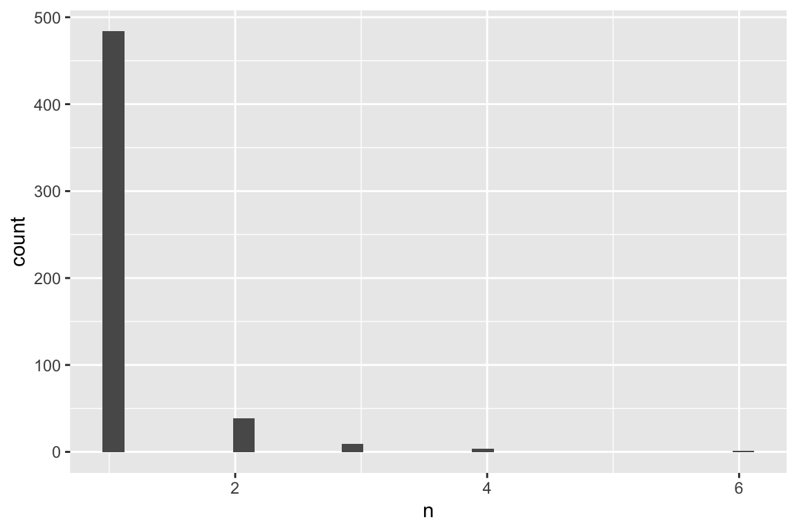
— which TOPICS are the most common?
wdr_subj3 %>%
# summarise whole bunch of columns with sum
summarise_at(vars(starts_with("all_topic_")), sum)## all_topic_Agriculture all_topic_Culture & Development all_topic_Education
## 1 3 1 5
## all_topic_Energy all_topic_Environment
## 1 1 14
## all_topic_Finance and Financial Sector Development
## 1 17
## all_topic_Geographical Information Systems all_topic_Governance
## 1 1 4
## all_topic_Health all_topic_Health Nutrition and Population all_topic_Industry
## 1 1 9 1
## all_topic_Information and Communication Technologies
## 1 3
## all_topic_Infrastructure Economics and Finance all_topic_institutions
## 1 1 1
## all_topic_International Economics & Trade all_topic_Law and Development
## 1 2 3
## all_topic_Macroeconomics and Economic Growth
## 1 25
## all_topic_Nutrition and Population all_topic_Poverty Reduction
## 1 1 9
## all_topic_Private Sector Development all_topic_Public Sector Development
## 1 17 2
## all_topic_Rural Development all_topic_Social Development
## 1 2 2
## all_topic_Social Protections and Labor all_topic_Transport
## 1 7 1
## all_topic_World Bank
## 1 1wdr_subj3 %>%
ggplot(aes(altmetric)) +
geom_histogram() +
scale_x_log10(labels =scales::comma_format())## `stat_bin()` using `bins = 30`. Pick better value with `binwidth`.## Warning: Removed 6 rows containing non-finite values (stat_bin).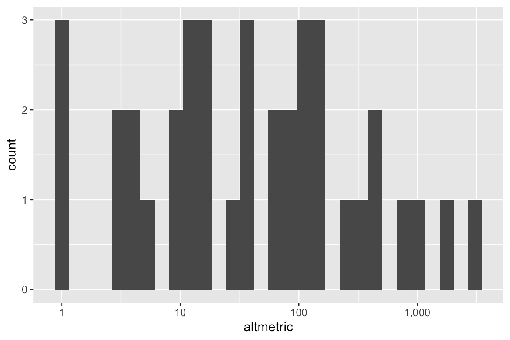
wdr_subj3 %>% ggplot( aes(x=altmetric, fill=decade)) +
geom_histogram( color="#e9ecef", alpha=0.6, position = 'identity') +
#scale_fill_manual(values=c("#69b3a2", "#404080")) +
#theme_ipsum() +
labs(fill="") +
facet_wrap(~decade)## `stat_bin()` using `bins = 30`. Pick better value with `binwidth`.## Warning: Removed 6 rows containing non-finite values (stat_bin).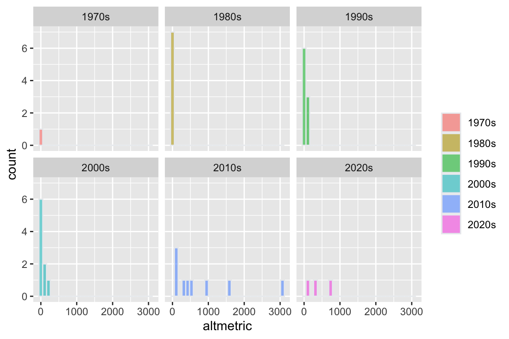
# not super meaningful but is says that over the decades the altmetric have been moving to the right (i.e. getting higher)
# most popular AFTER RESHAPING
wdr_top_gathered <- wdr_subj3 %>%
# summarise whole bunch of columns with sum
gather(top, value,(starts_with("all_topic_"))) %>%
mutate(top = str_remove(top, "all_topic_")) %>%
filter (value ==1)
wdr_top_gathered %>%
count(top, sort = TRUE)## top n
## 1 Macroeconomics and Economic Growth 25
## 2 Finance and Financial Sector Development 17
## 3 Private Sector Development 17
## 4 Environment 14
## 5 Health Nutrition and Population 9
## 6 Poverty Reduction 9
## 7 Social Protections and Labor 7
## 8 Education 5
## 9 Governance 4
## 10 Agriculture 3
## 11 Information and Communication Technologies 3
## 12 Law and Development 3
## 13 International Economics & Trade 2
## 14 Public Sector Development 2
## 15 Rural Development 2
## 16 Social Development 2
## 17 Culture & Development 1
## 18 Energy 1
## 19 Geographical Information Systems 1
## 20 Health 1
## 21 Industry 1
## 22 Infrastructure Economics and Finance 1
## 23 institutions 1
## 24 Nutrition and Population 1
## 25 Transport 1
## 26 World Bank 1wdr_top_gathered %>%
group_by(decade) %>%
count(top, sort = TRUE) %>%
arrange (desc(n) ) -> topic_bydecade
topic_bydecade %>%
ggplot(aes(n))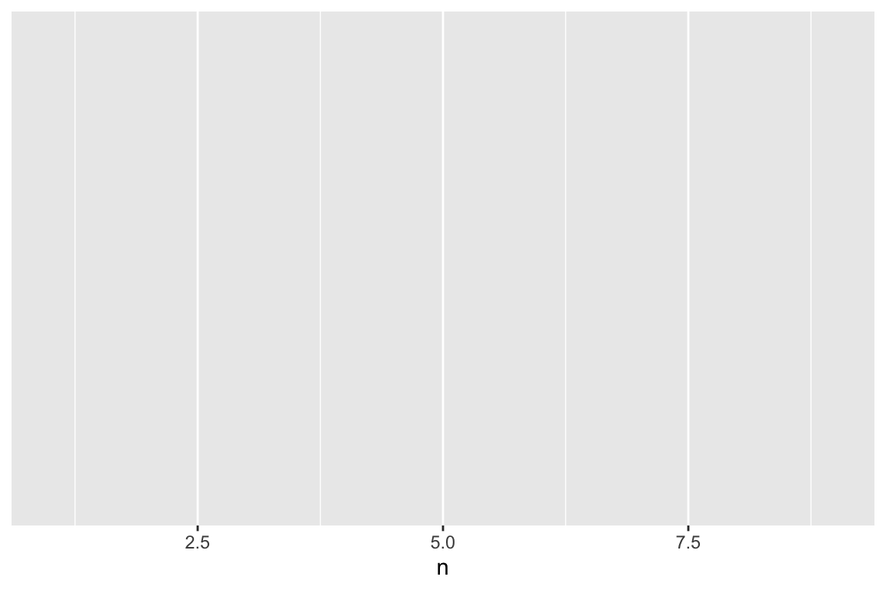
— plot most common TOPICS by decades
# skimr::n_unique(topic_bydecade$top) # 26
# skimr::skim(topic_bydecade$n) # 26
# geom_col
p_topic_over_decades <- topic_bydecade %>%
# filter ( n >1) %>%
# mutate(top = reorder(top, n)) %>%
# need reorder here or it won't stay
ggplot(aes(x= reorder(top, n), y = n), fill = decade) +
# geom_col() uses stat_identity(): it leaves the data as is.
geom_col(fill = "lightblue") +
scale_y_continuous( breaks = seq(1,9,1),
labels = c(seq(1,8,1), "9+" )
) +
# more readable
coord_flip() +
labs(title = "Most common topics in 44 WDRs over decades",
subtitle = "[High level topics covered = 26]",
y = "# of WDRs on topic per decade", x = ""
) + facet_wrap(~decade)
p_topic_over_decades
p_topic_over_decades %T>%
print() %T>%
ggsave(., filename = here("analysis", "output", "figures", "p_topic_over_decades.pdf"),
#width = 4, height = 2.25, units = "in",
device = cairo_pdf) %>%
ggsave(., filename = here("analysis", "output", "figures", "p_topic_over_decades.png"),
#width = 4, height = 2.25, units = "in",
type = "cairo", dpi = 300) ## Saving 6 x 4 in image
## Saving 6 x 4 in image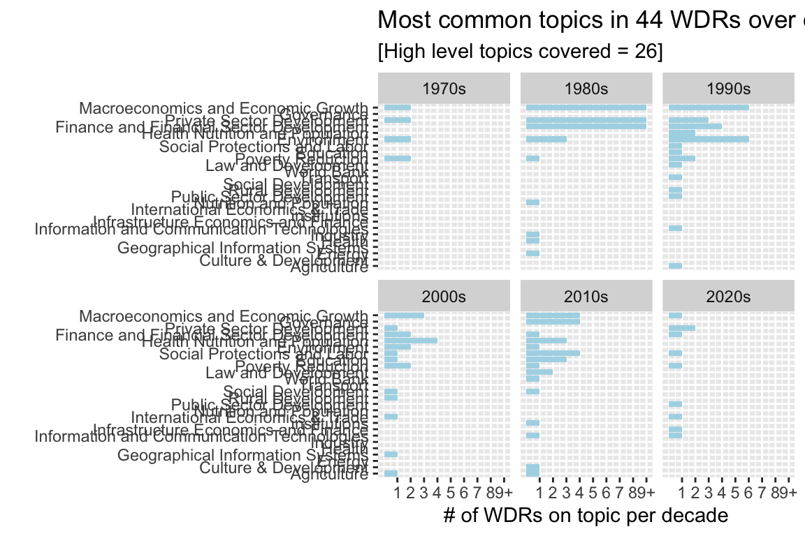
————– STOP ——————
need to create groups “umbrella subjects”
# ggplot(subj_bydecade, aes(n, fill = decade)) +
# geom_histogram(binwidth = 1,
# color = "white") +
# scale_y_continuous(breaks= pretty_breaks()) +
# xlim(0, 20) +
# labs(#title = ~date_issued,
# x = "frequency",
# y = "N of words @ that frequency") +
# facet_wrap( ~decade ) #+ # , ncol = 2, scales = "free_y")
# #guides( fill = "none") # way to turn legend off
#
# geom_col
p_most_common_word_in_subj <- subj_bydecade %>%
head(50) %>%
# filter ( n >1) %>%
mutate(subj = reorder(subj, n)) %>%
ggplot(aes(subj, n), fill = decade) +
# geom_col() uses stat_identity(): it leaves the data as is.
geom_col(fill = "lightblue") +
scale_y_continuous(labels = comma_format()) +
coord_flip() +
labs(title = "50 most common subjects in 44 World Development Reports' titles",
subtitle = "[ ]" #, y = "# of uses"
) +
facet_wrap(~decade)
p_most_common_word_in_subj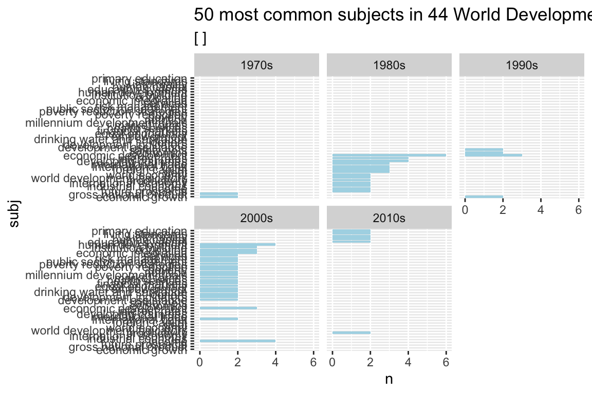
p_most_common_word_in_subj %T>%
print() %T>%
ggsave(., filename = here("analysis", "output", "figures", "most_common_word_in_subj.pdf"),
#width = 4, height = 2.25, units = "in",
device = cairo_pdf) %>%
ggsave(., filename = here("analysis", "output", "figures", "most_common_word_in_subj.png"),
#width = 4, height = 2.25, units = "in",
type = "cairo", dpi = 300) ## Saving 6 x 4 in image
## Saving 6 x 4 in image
— [word clouds by decade ???]
— [CORRELATION GRAPHS ???]
— PREDICTION OF DOWNLOADS ???
A4. Tokenization by n-gram - ITERATIVELY]
– using abstract?
– using subjects?
—
A5. Relationships between words: n-grams and correlations
examples are examining which words tend to follow others immediately,
or that tend to co-occur within the same documents. +
tidytext::token = "ngrams" argument is a method tidytext
offers for calculating and visualizing relationships between words in
your text dataset. It tokenizes by pairs of adjacent words rather than
by individual ones. We’ll also introduce two new packages:
ggraph, which extends ggplot2 to construct
network plots, and widyr, which calculates pairwise
correlations and distances within a tidy data frame. Together these
expand our toolbox for exploring text within the tidy data
framework.
— Tokenizing by n-gram
# break the text [e.g. 1 abstract] into individual tokens
abs_1 <- as_tibble(wdr$abstract[1] )
abs_1_t <- abs_1 %>%
# unnest (newColName, oldColName)
unnest_tokens(word, value ) # --> tidytext
abs_2022_bigrams <- wdr %>%
dplyr::filter(id == 36883) %>%
select(abstract) %>%
as_tibble() %>%
unnest_tokens(., output = bigram, input = abstract, token = "ngrams", n=2 )
# notice how these bigrams overlap— Tokenizing by n-gram - ITERATIVELY
# ---modo 1
# here I am basically adding rows wit repeated id attached
abs_bigrams <- wdr %>%
#dplyr::filter(id == 36883) %>%
select(id, title, date_issued, abstract) %>%
as_tibble() %>%
unnest_tokens(., output = bigram, input = abstract, token = "ngrams", n=2 ) %>%
count(bigram, sort = TRUE) # 7348 obs
# ----- what if I wanted to keep my 45 rows and add bigrams in a wide sense?
# ---modo 2
abs_prep <- wdr %>%
#dplyr::filter(id == 36883) %>%
select(id, title, date_issued, abstract) %>%
as_tibble() # 45 obs
myComplexFunction <- function(arg1, arg2, arg3, arg4){
col <- arg1 * arg2 * arg3 * arg4
x <- as.data.frame(col)
}
arg1 <- c(1, 3, 5, 7, 9)
arg2 <- c(2, 4, 6, 8, 10)
arg3 <- c(5, 10, 15, 20, 25)
arg4 <- c(10, 20, 30, 40, 50)
argList <- list(arg1, arg2, arg3, arg4)
# error Error in is_grouped_df(tbl) : argument "tbl" is missing, with no default
# abs_bigr_45 <- map_dfr(tbl = abs_prep,
# .x = abs_prep$abstract, .f = unnest_tokens(), output = bigram, input = abstract, token = "ngrams", n=2 )— Counting and filtering n-grams
# separate words
abs_2022_bigrams_sep <- abs_2022_bigrams %>%
count(bigram, sort = TRUE) %>%
# since many are bigram with a stopword
separate(bigram, c("word1", "word2"), sep = " ") %>%
filter(!word1 %in% stop_words$word) %>%
filter(!word2 %in% stop_words$word)
# new bigram counts:
abs_2022_bigrams_sep_counts <- abs_2022_bigrams_sep %>%
# Count observations by group
count(word1, word2, sort = TRUE)
abs_2022_bigrams_sep_counts## # A tibble: 31 × 3
## word1 word2 n
## <chr> <chr> <int>
## 1 19 based 1
## 2 affect low 1
## 3 central role 1
## 4 continued access 1
## 5 covid 19 1
## 6 debt management 1
## 7 debts innovations 1
## 8 economic recovery 1
## 9 economic risks 1
## 10 ensure continued 1
## # … with 21 more rows # OPPOSITE: reunite words
abs_2022_bigrams_united <- abs_2022_bigrams_sep %>%
unite(bigram, word1, word2, sep = " ")— Analyzing bigrams
In other analyses you may be interested in the most common trigrams, which are consecutive sequences of 3 words. We can find this by setting n = 3:
— Trigrams
In other analyses you may be interested in the most common trigrams, which are consecutive sequences of 3 words. We can find this by setting n = 3:
A6. [Concordances: lag and lead words…]
As in Ben Schmidt Chp 8.2.3
————– TO do | To Rethink ——————
- DAG graph of my research question
- metadata $downloads? on WDRs ? (I am using “altmetrics” but I don’t know how important it is)
- create my own stop_words list (which excludes also “date_issued”, “report”, etc)
- leggere (Yusuf 2008)
- need to create groups “umbrella subjects”
Reference Tutorials
Robinson and Silge (2022) Benjamin Soltoff: Computing 4 Social Sciences - API Benjamin Soltoff: Computing 4 Social Sciences - text analysis
Ben Schmidt Book Humanities Crurse Ben Schmidt Book Humanities
- ✔️ MEDIUM articles: common words, pairwise correlations - 2018-12-04
- TidyTuesday Tweets - 2019-01-07
- Wine Ratings - 2019-05-31 Lasso regression | sentiment lexicon,
- Simpsons Guest Stars 2019-08-30 geom_histogram
- Horror Movies 2019-10-22 explaining glmnet package | Lasso regression
- The Office 2020-03-16 geom_text_repel from ggrepel | glmnet package to run a cross-validated LASSO regression
- Animal Crossing 2020-05-05 Using geom_line and geom_point to graph ratings over time | geom_text to visualize what words are associated with positive/negative reviews |topic modelling